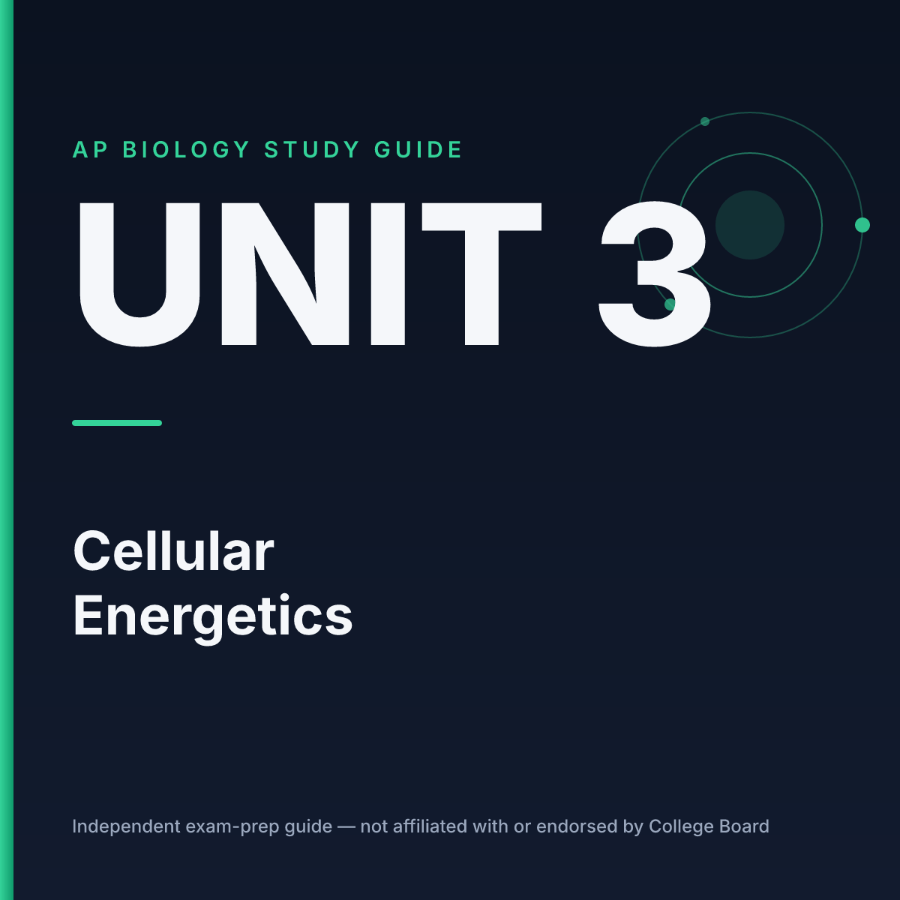

AP Biology · Unit 3
Free Launch Edition / $3 Value
Unit 3: Cellular Energetics Complete Study Guide
Enzymes, free energy (ΔG), cellular respiration, and photosynthesis explained from scratch with zero filler.
- 1-Page Unit Map + Free Energy (ΔG), ATP & redox coupling
- Enzyme Kinetics Table: temp, pH, salinity & all 3 inhibition types
- Cellular Respiration: glycolysis, pyruvate oxidation, Krebs, ETC & chemiosmosis per-glucose table
- Photosynthesis: linear vs. cyclic flow, Calvin cycle, C3/C4/CAM table
- Practice & Review: 6 original FRQ sets with full answer keys + 1-page cram sheet